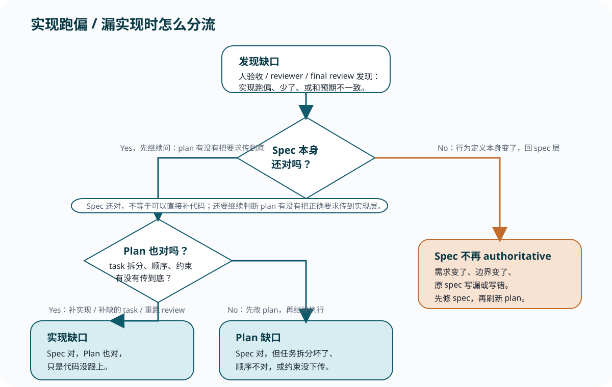

Reference
实现跑偏与 spec 分流速查
这页只服务一个问题：发现实现跑偏、漏实现、或 review 指出缺口后，你到底该补实现、改 plan，还是回 spec。
先抓一句总判断
行为边界没变：先看实现层或 plan 层。
行为边界变了：回 spec 层，再刷新 plan。
分流图

三种情况最短记法
| 情况 | 更像什么 | 第一动作 |
|---|---|---|
| spec 对，代码少了 | 实现缺口 | 补实现 / 补 task / 重跑 review |
| spec 对，但 task 拆坏了 | plan 缺口 | 先改 plan，再继续执行 |
| 真正想要的行为变了 | spec 缺口 | 先修 spec，再刷新 plan |